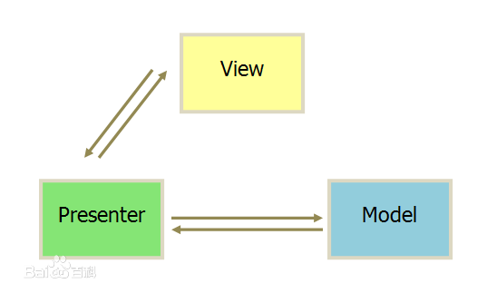
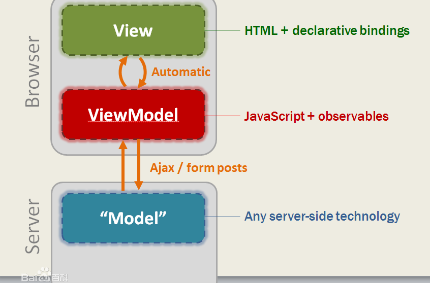

文章前我想先提几个问题
- MVVM到底是什么？它与MVC有什么区别？
- MVVM中的VM到底扮演什么角色？它与Controller有什么区别？
概述
关于MVVM，相信大家或多或少都有所了解。该概念是由微软公司最先提出的，它是Modal-View-ViewModal的简称。
首先先给大家介绍下它的发展历程：
- MVC全称Model-View-Controller。从结构上可分为3层：
最长层。面向最终用户的“视图层”（View）。它是提供给用户操作的界面，是程序的外壳。
最底层。是核心的“数据层”（Model）。
中间层。是“控制层”（Controller），它负责根据用户从“视图层”输入的指令，选取“数据层“中的数据，然后对其进行相应的操作，产生最终的结果。 - MVP全称Model-View-Presenter。MVP是MVC模式演变而来的。它们的基本思想都是：Controller/Presenter负责逻辑的处理，Model提供数据，View负责显示数据。
- MVVM是微软公司提出的，它是MVP模式与WPF结合的应用方式发展演变而来的一种新型框架。
相信了解MVC框架的的对M和V都已经有所了解，但是VM的作用以及如何使用它？它有什么优点缺点？以及与MVC的区别。下面会为大家进行讲解。
这里先给大家展示一张经典的表达MVC和MVVM精华的缩略图：


从图中我们大概可以了解到以下几点：
- 在MVP中View并不直接使用Model，它们之间是通过Presenter进行的，所有的交互都发生在Presenter内部，而MVC中的View是直接从Model读取数据而不是Controller。
- Presenter与具体的View是没有直接关联，而是通过定义好的接口进行交互，从而使得在变更View的时候可以保持Presenter的不变，即重用。如果要实现的UI比较复杂，而且相关的展示逻辑还和Model有关系，就可以在View和Presenter之间设置一个Adapter，由这个Adapter来访问Model和View，避免两者之间的关联。
- View和ViewModel之间没有了MVP的界面接口，而是直接交互，用数据”绑定”的形式让数据更新的事件不需要开发人员手动去编写特殊用例，而是自动的双向同步。与MVP相比，MVVM不仅简化了业务与界面的依赖关心，还优化了数据频繁更新的解决方案。
迷你MVVM的实现
概述
该demo实现了mvvm很基本的功能，像解析数据、数据双向绑定以及绑定事件等操作。具体的实现思路是：- 如何解析DOM模板
- 如何解析数据
- 如何绑定模板与数据
由于MVVM的主要思想是实现数据的双向绑定，所以可以利用Object.defineProperty方法的setter和getter实现对数据的监听。
基本组成部分
要实现mvvm的双向绑定，就必须要实现以下几点：- 实现一个数据监听器Observer，能够对数据对象的所有属性进行监听，如有变动可拿到最新值并通知订阅者
- 实现一个指令解析器Compile，对每个元素节点的指令进行扫描和解析，根据指令模板替换数据，以及绑定相应的更新函数
- 实现一个Watcher，作为连接Observer和Compile的桥梁，能够订阅并收到每个属性变动的通知，执行指令绑定的相应回调函数，从而更新视图
- mvvm入口函数，整合以上三者
以上流程如下图所示：
实现难点
- 如何在监听到数据变化之后，通知给被观察者？利用发布订阅者模式，在数据变化之后，通知订阅者，订阅者在接收到变化之后，做相应的处理。
- 如何将compile与observer联系起来？利用watcher将两者联系起来，能够订阅并收到每个属性变化的通知，执行指令绑定对应的回调函数。
- 如何定义指令的优先级（未实现）
MVVM的优缺点
- 优点
- 低耦合：View可以独立于Model变化和修改，同一个ViewModel可以被多个View复用；并且可以做到View和Model的变化互不影响；
- 可重用性：可以把一些视图的逻辑放在ViewModel，让多个View复用；
- 独立开发：开发人员可以专注与业务逻辑和数据的开发（ViewModel），界面设计人员可以专注于UI(View)的设计；
- 可测试性：清晰的View分层，使得针对表现层业务逻辑的测试更容易，更简单。
- 缺点
- 类会增多： 每个View对应一个ViewModel
- 调用复杂度增大：由于数据都是从viewModel获取的，对于新人来说，最开始看代码，不知道真实的模型是谁。例如常用的tab组件，一般都是一个数据，如果不断的通过viewModel去取，沟通上没有那么直接。况且每封装一层，意味着要写很多的代码去融合他们的转化。
- 数据绑定使得Bug很难背调试。例如看到页面异常，有可能View的代码有bug也有可能是Model的代码有问题，定位问题变得不那么容易。
- 数据双向绑定不利于代码重用
MVVM适用场景
- 需要实时显示数据的变化: MVVM最大的特点就是实现了数据的双向绑定
- 业务逻辑与数据分离